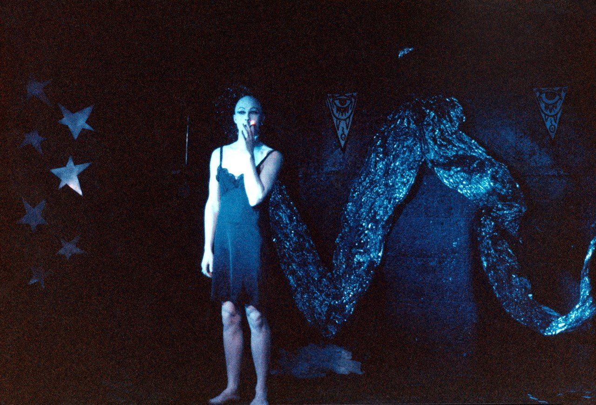
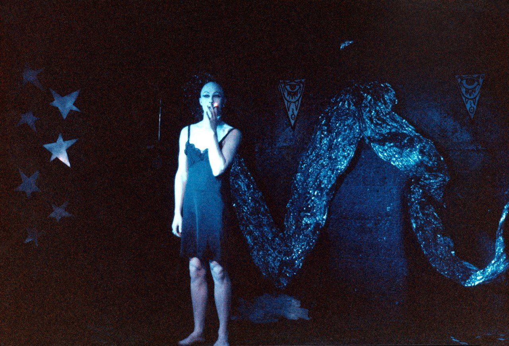

ODE MAGAZINE
Hot topic:
Blacklips: Her Life and Her Many, Many Deaths (2023)
gets us under the skin of 90's NYC Club kids
A Sacred Cabaret
"We did drag
to survive"
From June 1992 to March 1995, in the midst of the AIDS crisis in NYC, an extraordinary theatrical collective emerged from queer underground.
Blacklips Performance Cult, initiated by ANOHNI and joined by a cabal of fellow artists, drag queens, punks, queers, nightlife veterans, students; performed a new play every Monday night at 1:00 a.m. at the Pyramid Club on 101 Avenue A.
Blacklips never courted mainstream attention.
However, the group left a sustaining impression within New York’s late night subculture by melding hysterical drag, surreal horror, disconcerting tenderness.
Blacklips: Her Life and Her Many, Many Deaths, ANOHNI and coeditor Marti Wilkerson lay bare the collective’s archives in photographs, scripts, and the assembled ephemera from more than one hundred and twenty-eight original “plays.”
Featuring images from newly digitized film and video recordings and texts
from participants, audience members and an introduction by Lia Gangitano, this expansive collection introduces to the twenty-first century the short-lived and ruthlessly creative phenomenon that was Blacklips collective.
The book features a wealth of archival material, including 230 photographs, scripts, images from newly digitised film and video recordings, texts from participants and audience members, and an introduction by Lia Gangitano.
Through these materials, ANOHNI and co-editor Marti Wilkerson offer readers an intimate look at the creative and cultural context that gave rise to Blacklips. The Blacklips Performance Cult was known for its innovative and provocative performances, which often explored themes of sexuality, gender and mortality.
The group's members were primarily queer artists and activists, and their work was deeply informed by the political and social struggles of
the time. The original troupe was founded in the summer of 1992 by Anohni with Johanna Constantine and Psychotic Eve. In a short time, the troupe had grown to consist of 15 downtown artists from utterly diverse backgrounds; mixing gender, age and experience. This factor made the troupe stand out in the crowds of the underground scene.
The troupe started doing shows in the Crow Bar but soon moved to the Pyramid Club where it would set up different plays each Monday night. The first play was The Scarlet Letter adapted by Anohni, shown once on 12 October 1992. The last play was 13 Ways to Die, which was shown on 13 March 1995. Anohni directed and wrote the play "Miracle Now" which were performed with many of the Blacklips members.
The troupe quickly became famous in the avant garde underground club culture of the Lower East Side and East Village.

While Blacklips was short-lived, its influence can still be felt today. The group's commitment towards pushing boundaries and challenging norms has inspired generations of artists and performers. By us documenting the history of The Blacklips, ANOHNI and Wilkerson have ensured that this important cultural movement will not be forgotten.
At The Blacklips Bar: Androgyns and Deviants — Industrial Romance for Bruised and Battered Angels, this 1992–1995 compilation combines original recordings and select DJ tracks from the Blacklips vaults. The double album vinyl edition is illustrated as well as designed by ANOHNI, and includes a previously unseen ephemera and extensive liner notes by the artist.
Staging collectively conceived plays set Blacklips stod apart from other expressions of creativity in nightlife of the same era, aligning the group with predecessors such as The Cockettes, Angels of Light, Bloolips and Theater of the Ridiculous. Blacklips members built sets from garbage and industrial refuse that they found in the streets of the East Village,
in homage to Jack Smith and the aesthetics of post apocalyptic punk. The group staged spectacles that was very alternately surreal, slapstick, violent and absurd, often ended with a pile of bodies on stage.
However, the group left a sustaining impression within hidden
New York’s late night subculture by melding hysterical drag, surreal horror, and disconcerting tenderness.
In Blacklips: Her Life and Her Many, Many Deaths, ANOHNI and coeditor Marti Wilkerson lay bare in the collective’s archives in photographs, scripts, and the assembled ephemera from more than one hundred and twenty original “plays.” As Blacklips was the first showcase for ANOHNI’s music, this one compilation features remastered original recordings by ANOHNI, plus DJ tracks by artists including New York legend Joey Arias in his incarnation as BIllie Holiday, LA death rock founder Rozz Williams, avant-garde icon Diamanda Galás,UK punk pioneer Joy Dave Vanian, underground actress Edith Massey, London surrealist Leigh Bowery and his band Minty, and studio recordings by coke, James F. Murphy, Sissy Fitt and Ebony Jet. Dialogue, sound effects and ambient textures add to the cacophony of passion, stark and bold violence, beauty, heartbreak and maniacal humor.
The work of Blacklips Performance Cult was unearthed for the first time at 13 Ways to Die, a recent exhibit at Participant Inc. in NYC, hailed by The New Yorker’s Hilton Als as “exquisite, emotional, and haunting.” ANOHNI will join in conversation at the New York Public Library on March 9th. ●
© Augusta Sävblom 2025
.jpeg) 
